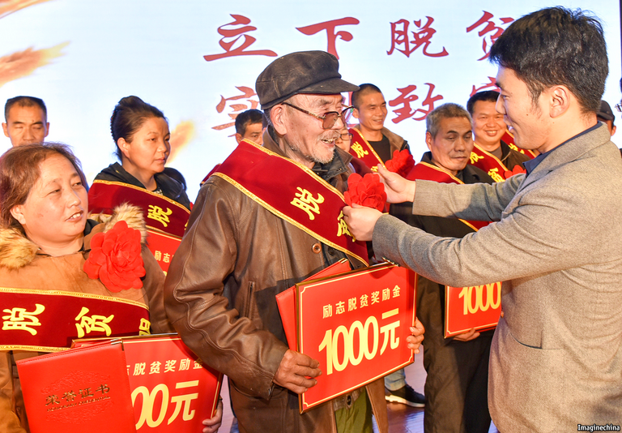

2021-01-13T14:13:28+00:00
经济发展
增长的果实
官方宣布，极端贫困在中国已成为历史
上月初，中国宣布消除了国内的极端贫困。这是令人惊叹的巨大成就。据世界银行估计，过去40年里中国约有八亿人摆脱了赤贫。正如官方媒体所说，这也是历史性的胜利。在中国历史上，消除贫困从来都是可望不可及的事。
西南省份贵州的紫云县是最后一批宣布脱贫的地点之一。“老实说，这是假的。”村民梁勇（音译）冷冷地说。官方对紫云县经济状况的核查只是走过场，他说。省里的领导突然来村里，宣布紫云县已经脱贫，然后就匆匆离开了。“这都是表演。我们心里都知道是怎么回事。”他咕哝道。
但冷静的观察者还是会站在政府这一边。对梁勇来说，生活无疑很艰难。现在猪肉很贵，他一周只吃两三回。付完两个孩子的学费后，手头的钱已所剩无几。他生煤炉御寒。与中国很多人尤其是城里人相比，他肯定是贫穷的。他父亲最近被查出肺癌，但他没钱给他好好治病。这个时候看到庆祝战胜了贫困，他高兴不起来。但是，能吃上肉、上得起学、取得上暖，表明梁勇实际上已经摆脱了极端贫困，即最基本的需求得到了满足。
中国是否为赢得“脱贫攻坚战”篡改了数据？有人会这么问可以理解。肯定还存在零散的赤贫案例。但是，中国给自己设定的脱贫门槛已经算高了。它一直在不断提高官方贫困线，现在按2011年物价水平（并经生活成本调整）为每人每天约2.3美元。相比之下，世界银行把极端贫困人口定义为每天生活费不足1.9美元的人群，他们约占世界人口的十分之一。富裕国家的贫困线要高得多：美国四口之家的贫困线是按2020年物价水平为每天72美元。以中国目前的标准，1978年也就是毛泽东去世后不久，近98%的农村人口生活在极端贫困中。到2016年，这一比例下降到不足5%（见图表）。
中国政府最大的贡献是废除了中央计划经济，让人们赚钱。它取消了农业集体化，让农民有更多动力生产更多粮食；允许人们到全国各地找工作；给企业家更多自由；通过修建公路、投资教育和吸引外国投资者提供辅助。政府的目标是促进经济发展，减轻贫困则是一个受欢迎的附带成果。
国家领导人习近平在2015年誓言要在2020年底前彻底消除极端贫困，此后政府的做法发生了变化。官员们迅速行动起来。他们对那些找到脱贫路子的穷人予以奖励（见图），试图以此提高个人的积极性。他们大范围支出公共资金。2015年，中央政府划拨的扶贫专项资金达到极端贫困户人均500元。2020年的拨款额人均超过2.6万元（见图表）。
在紫云，脱贫战的印记随处可见。政府机关的墙上贴满了大幅宣传画。其中一幅上是一株写着“穷根子”的植物，正被人从土里拔出来。主干道上到处都是标语，有些非常直白（“让农民多挣钱”），还有一些颇高大上（“扶贫先扶智”）。
贫困人口居住区的地形地貌是最大的挑战之一。习近平启动脱贫战时，认定的832个贫困县——约占全国县城总数的30%——全部以农村为主要构成。它们大多位于山区或居住条件恶劣的地带。官员们对这些县基本的扶贫方法有两种。这两种在紫云都能看到。
第一种是以现代农业为主的产业引进。在紫云县的洛麦村，政府创建了一个25公顷的香菇种植加工区。大约有70名当地人在那里工作。过去，他们只能要么外出打工，要么靠种玉米勉强度日。但香菇是一种经济作物，能让他们每天挣80块钱左右，这已经是不错的收入了。
这种方法有点讽刺。上世纪80年代，中国废除了公社农场，让人们自谋出路。现在政府却希望他们再次把自己的资源汇集起来。官员们经常说这是把农民变成“股东”。村民可以在新型乡镇企业中获得股份，如果一切顺利，这些企业会给他们分红。这些项目通常会安排给外来的大公司负责。比如洛麦香菇农场由国有企业中国南方电网经营。但是随着脱贫战收官，一些项目将面临草草收场的风险。
第二种帮助贫困村庄的方法更激进：把村民搬迁到与外界联系更多的地区。2016年至2020年间，官员们重新安置了约1000万人。长期以来，中国一直大规模迁移人口以给发展腾地，比如拆迁村落建大坝。而在这种情况下，重新安置本身就是个发展项目。政府认为，向最偏远村庄提供从道路到医疗的各种必需服务的成本太高，还是把居民搬到城镇的附近成效更好。
在紫云县城的中心坐落着一幢幢整齐的黄色公寓楼。这是个定居点，居民都来自离这里有点路程的一个贫困村。把村民搬进这样的住所后，为他们找工作便成了个常见问题。在这种情况下，政府号召地方官员为每户家庭至少解决一个人的就业。在通往紫云新定居点的大门口，妇女们趴在小作坊里的缝纫机上。一名中年妇女说自己干不了这活，官员们就给她安排了一份环卫工作。她对新环境很满意。街对面就有一所好学校，这对她的孩子来说比以前好太多了。
一个更大的挑战是相对贫困，这个问题对于任何一个曾在繁华的沿海城市和乏味的内陆城镇间往来过的人来说，都是非常明显的。人们的收入可能远高于官方贫困线，但仍会感到自己很穷。中国经济学家最近的一项研究认为，农村地区的“主观贫困线”约为每天23元，几乎是官方认定的贫困标准的两倍。这符合许多经济学家使用的标准，也就是把相对贫困线设定在收入中值水平的一半。它表明大约三分之一的中国农村人口仍然认为自己是穷人。
如果以这种方式计算，消除贫困会变得几乎无法实现，因为随着中国变得更加富裕，贫困线也会稳步上升。但使用相对定义的一个好处是，它更符合人们的感受。中国没有统计任何城市贫困人口，因为福利保障措施据信应能帮到那些没钱的人。但是，农民工缺乏能便捷地享受到城市福利所需的户籍证明。而且对任何城市居民而言，能得到的帮助也是微薄的。陈绍华和马丁·拉瓦雷（Martin Ravallion）最近为美国国家经济研究局（National Bureau of Economic Research）撰写的一篇论文显示，用相对定义来衡量，中国约有五分之一的城市居民可被列为贫困人口。
为了减少相对贫困，中国需要采取一些有别于在脱贫攻坚战中使用的策略。它将必须重新分配收入，比如向富人多征税，并让农民工更容易获得城市的公共服务——但政府对这些政策似乎一直不太热心。
在蓬勃发展的贵州省会贵阳的街头，困苦之况依然随处可见。背着背篓的男人走在街头，寻找搬运货物的工作。50来岁的搬运工周伟福（音译）对“贫困已经消除”的说法嗤之以鼻。“我这干的都是什么活？我基本上什么钱都挣不到。”他说。中国完全有理由为战胜极端贫困而自豪。但是官员们不那么大张旗鼓地庆祝会是明智之举。
2021-01-13T14:13:28+00:00
Economic development
The fruits of growth
Extreme poverty is history in China, officials say

EARLY IN DECEMBER China announced that it had eradicated extreme poverty within its territory. This achievement is breathtaking in scale. By the World Bank’s estimate, some 800m people in China have escaped penury in the past four decades. It is a triumph for the ages, too, as state media have noted. Never before in the country’s history has destitution come anywhere close to being eliminated.
One of the final places declared poverty-free is Ziyun, a county in the south-western province of Guizhou. “Speaking frankly, it’s a lie,” says Liang Yong, a gruff villager. The official investigation of Ziyun’s economy was, he says, perfunctory. Provincial leaders popped into his village, rendered their verdict that it had left poverty behind and then sped off. “It’s a show. In our hearts we all know the truth,” he grumbles.
But a hard-headed observer would side with the government. Things are undoubtedly difficult for Mr Liang. Pork is pricey these days, so he eats meat just a couple of times a week. After paying his two children’s school fees, he has little money left. To ward off the winter, he sits close to a coal-fired stove. He is poorer than many others in China, especially in its cities. He does not like to see victory over poverty being celebrated when he cannot afford proper medical care for his father, recently diagnosed with lung cancer. But the ability to scrape enough together for meat, education and heating marks Mr Liang as someone who has in fact left extreme poverty—a condition in which basic needs go unmet.
Sceptics understandably ask whether China fiddled its numbers in order to win what it calls the “battle against poverty”. There are of course still isolated cases of abject deprivation. China, however, set itself a fairly high bar. It has regularly raised the official poverty line, which, accounting for living costs, is about $2.30 a day at prices prevailing in 2011. (By comparison, the World Bank defines as extremely poor those who make less than $1.90 a day, as roughly a tenth of human beings do. Poverty lines in rich countries are much higher: the equivalent line in America is about $72 a day for a four-member household at 2020 prices.) In 1978, shortly after Mao’s death, nearly 98% of those in the countryside lived in extreme poverty, by China’s current standards. By 2016 that was down to less than 5% (see chart on next page).
The government’s biggest contribution was to pull back from central planning and let people make money. It decollectivised agriculture, giving farmers an incentive to produce more. It allowed people to move around the country to find work. It gave more freedom to entrepreneurs. It helped by building roads, investing in education and courting foreign investors. Its goal was to boost the economy; alleviating poverty was a welcome side-effect.
The government’s approach changed in 2015 when Xi Jinping, its leader, vowed to eradicate the last vestiges of extreme poverty by the end of 2020. Officials jumped to it. They tried to encourage personal initiative by rewarding poor people who found ways of bettering their lot (see picture). They spent public money widely. In 2015 central-government funding earmarked for poverty alleviation was an average of 500 yuan ($77) per extremely poor person. In 2020 the allocation per head was more than 26,000 yuan (see chart).
The imprint of the anti-poverty campaign is visible everywhere in Ziyun. The walls of government offices are covered in murals. One depicts a plant, labelled as the “roots of poverty”, being yanked from the soil. Slogans dot the main roads—some admirably simple (“Let farmers make more money”), others lofty (“To help people out of poverty, first help them become wise”).
One of the biggest challenges has been the terrain where the poor live. The 832 counties—about 30% of the country’s total—that were designated as poverty-stricken when Mr Xi began his anti-poverty campaign were all mainly rural. Most were mountainous or on inhospitable land. Officials used two basic approaches to help these counties. Both are visible in Ziyun.
The first was to introduce industry—mostly modern agriculture. In Luomai, a village in Ziyun, the government created a 25-hectare zone for growing and processing
There is an irony in this. In the 1980s China broke up communal farms, letting people strike out on their own. Now the government wants them to pool their resources again. Officials often describe it as turning farmers into “shareholders”. Residents get stakes in new rural enterprises, which, all going well, will pay dividends. Big outside companies are often placed in charge of the projects. The Luomai
The second approach to helping hard-up villages was more radical: moving inhabitants to better-connected areas. Between 2016 and 2020 officials relocated about 10m people. China has long moved people around on a huge scale to allow development—for instance clearing out homes to build dams. But in this case resettlement was itself the development project. The government concluded that it was too costly to provide necessary services, from roads to health care, to the most remote villages. It reckoned that moving residents closer to towns would work better.
A collection of tidy yellow apartment blocks sits in the centre of Ziyun county. It is a settlement for former inhabitants of a poor village some distance away. A frequent problem after moving people into such housing is finding work for them. In this case, the government called on local officials to arrange jobs for at least one member of each household. At the gate to the new compound in Ziyun, women hunch over sewing machines in small workshops. A middle-aged resident says she could not handle that work, so officials gave her a job in a sanitation crew. She is pleased with her new surroundings. There is a good school just across the street, which is far better for her child.
A bigger challenge is relative deprivation, a problem abundantly evident to anyone who has travelled between the glitzy coastal cities and the drabber towns of the hinterland. People may have incomes well above the official poverty line, but they can still feel poor. A recent study by Chinese economists concluded that the “subjective poverty line” in rural areas was about 23 yuan per day, nearly twice the amount below which a person would be officially classified as poor. That conforms with a standard used by many economists, namely setting the relative poverty line at half the median income level. It suggests that about a third of rural Chinese still see themselves as poor.
If poverty is calculated this way it becomes almost impossible to eliminate, since the poverty line steadily rises as the country gets richer. But one virtue of using a relative definition is that it better matches the way people feel. China does not count any poverty in its cities because welfare safeguards supposedly help those without money. But workers who have moved from the countryside lack the right documentation for ready access to urban welfare. And for any city-dweller, support is meagre. In relative terms about a fifth of China’s urban residents can be classified as poor, according to a recent paper for the National Bureau of Economic Research by Chen Shaohua and Martin Ravallion.
To reduce relative poverty, China needs different tactics from the ones used in its campaign against extreme poverty. It would have to redistribute incomes, for example by imposing heavier taxes on the rich and making it easier for migrants to obtain public services in cities—policies for which it has shown little eagerness.
On the streets of Guiyang, the booming capital of Guizhou, hardship is still a common sight. Men walk with straw baskets strapped to their backs, looking for work as load-carriers. Zhou Weifu, a porter in his 50s, scoffs at the suggestion that poverty is over. “What kind of work is this? I can barely make any money,” he says. China has every right to be proud of its victory over dire poverty. But officials would be wise to keep their celebrations muted. ■
2021-01-13T14:13:28+00:00
經濟發展
增長的果實
官方宣布，極端貧困在中國已成為歷史
上月初，中國宣布消除了國內的極端貧困。這是令人驚嘆的巨大成就。據世界銀行估計，過去40年里中國約有八億人擺脫了赤貧。正如官方媒體所說，這也是歷史性的勝利。在中國歷史上，消除貧困從來都是可望不可及的事。
西南省份貴州的紫雲縣是最後一批宣布脫貧的地點之一。“老實說，這是假的。”村民梁勇（音譯）冷冷地說。官方對紫雲縣經濟狀況的核查只是走過場，他說。省里的領導突然來村裡，宣布紫雲縣已經脫貧，然後就匆匆離開了。“這都是表演。我們心裡都知道是怎麼回事。”他咕噥道。
但冷靜的觀察者還是會站在政府這一邊。對梁勇來說，生活無疑很艱難。現在豬肉很貴，他一周只吃兩三回。付完兩個孩子的學費後，手頭的錢已所剩無幾。他生煤爐禦寒。與中國很多人尤其是城裡人相比，他肯定是貧窮的。他父親最近被查出肺癌，但他沒錢給他好好治病。這個時候看到慶祝戰勝了貧困，他高興不起來。但是，能吃上肉、上得起學、取得上暖，表明梁勇實際上已經擺脫了極端貧困，即最基本的需求得到了滿足。
中國是否為贏得“脫貧攻堅戰”篡改了數據？有人會這麼問可以理解。肯定還存在零散的赤貧案例。但是，中國給自己設定的脫貧門檻已經算高了。它一直在不斷提高官方貧困線，現在按2011年物價水平（並經生活成本調整）為每人每天約2.3美元。相比之下，世界銀行把極端貧困人口定義為每天生活費不足1.9美元的人群，他們約佔世界人口的十分之一。富裕國家的貧困線要高得多：美國四口之家的貧困線是按2020年物價水平為每天72美元。以中國目前的標準，1978年也就是毛澤東去世後不久，近98%的農村人口生活在極端貧困中。到2016年，這一比例下降到不足5%（見圖表）。
中國政府最大的貢獻是廢除了中央計劃經濟，讓人們賺錢。它取消了農業集體化，讓農民有更多動力生產更多糧食；允許人們到全國各地找工作；給企業家更多自由；通過修建公路、投資教育和吸引外國投資者提供輔助。政府的目標是促進經濟發展，減輕貧困則是一個受歡迎的附帶成果。
國家領導人習近平在2015年誓言要在2020年底前徹底消除極端貧困，此後政府的做法發生了變化。官員們迅速行動起來。他們對那些找到脫貧路子的窮人予以獎勵（見圖），試圖以此提高個人的積極性。他們大範圍支出公共資金。2015年，中央政府劃撥的扶貧專項資金達到極端貧困戶人均500元。2020年的撥款額人均超過2.6萬元（見圖表）。
在紫雲，脫貧戰的印記隨處可見。政府機關的牆上貼滿了大幅宣傳畫。其中一幅上是一株寫着“窮根子”的植物，正被人從土裡拔出來。主幹道上到處都是標語，有些非常直白（“讓農民多掙錢”），還有一些頗高大上（“扶貧先扶智”）。
貧困人口居住區的地形地貌是最大的挑戰之一。習近平啟動脫貧戰時，認定的832個貧困縣——約佔全國縣城總數的30%——全部以農村為主要構成。它們大多位於山區或居住條件惡劣的地帶。官員們對這些縣基本的扶貧方法有兩種。這兩種在紫雲都能看到。
第一種是以現代農業為主的產業引進。在紫雲縣的洛麥村，政府創建了一個25公頃的香菇種植加工區。大約有70名當地人在那裡工作。過去，他們只能要麼外出打工，要麼靠種玉米勉強度日。但香菇是一種經濟作物，能讓他們每天掙80塊錢左右，這已經是不錯的收入了。
這種方法有點諷刺。上世紀80年代，中國廢除了公社農場，讓人們自謀出路。現在政府卻希望他們再次把自己的資源彙集起來。官員們經常說這是把農民變成“股東”。村民可以在新型鄉鎮企業中獲得股份，如果一切順利，這些企業會給他們分紅。這些項目通常會安排給外來的大公司負責。比如洛麥香菇農場由國有企業中國南方電網經營。但是隨着脫貧戰收官，一些項目將面臨草草收場的風險。
第二種幫助貧困村莊的方法更激進：把村民搬遷到與外界聯繫更多的地區。2016年至2020年間，官員們重新安置了約1000萬人。長期以來，中國一直大規模遷移人口以給發展騰地，比如拆遷村落建大壩。而在這種情況下，重新安置本身就是個發展項目。政府認為，向最偏遠村莊提供從道路到醫療的各種必需服務的成本太高，還是把居民搬到城鎮的附近成效更好。
在紫雲縣城的中心坐落着一幢幢整齊的黃色公寓樓。這是個定居點，居民都來自離這裡有點路程的一個貧困村。把村民搬進這樣的住所後，為他們找工作便成了個常見問題。在這種情況下，政府號召地方官員為每戶家庭至少解決一個人的就業。在通往紫雲新定居點的大門口，婦女們趴在小作坊里的縫紉機上。一名中年婦女說自己幹不了這活，官員們就給她安排了一份環衛工作。她對新環境很滿意。街對面就有一所好學校，這對她的孩子來說比以前好太多了。
一個更大的挑戰是相對貧困，這個問題對於任何一個曾在繁華的沿海城市和乏味的內陸城鎮間往來過的人來說，都是非常明顯的。人們的收入可能遠高於官方貧困線，但仍會感到自己很窮。中國經濟學家最近的一項研究認為，農村地區的“主觀貧困線”約為每天23元，幾乎是官方認定的貧困標準的兩倍。這符合許多經濟學家使用的標準，也就是把相對貧困線設定在收入中值水平的一半。它表明大約三分之一的中國農村人口仍然認為自己是窮人。
如果以這種方式計算，消除貧困會變得幾乎無法實現，因為隨着中國變得更加富裕，貧困線也會穩步上升。但使用相對定義的一個好處是，它更符合人們的感受。中國沒有統計任何城市貧困人口，因為福利保障措施據信應能幫到那些沒錢的人。但是，農民工缺乏能便捷地享受到城市福利所需的戶籍證明。而且對任何城市居民而言，能得到的幫助也是微薄的。陳紹華和馬丁·拉瓦雷（Martin Ravallion）最近為美國國家經濟研究局（National Bureau of Economic Research）撰寫的一篇論文顯示，用相對定義來衡量，中國約有五分之一的城市居民可被列為貧困人口。
為了減少相對貧困，中國需要採取一些有別於在脫貧攻堅戰中使用的策略。它將必須重新分配收入，比如向富人多徵稅，並讓農民工更容易獲得城市的公共服務——但政府對這些政策似乎一直不太熱心。
在蓬勃發展的貴州省會貴陽的街頭，困苦之況依然隨處可見。背着背簍的男人走在街頭，尋找搬運貨物的工作。50來歲的搬運工周偉福（音譯）對“貧困已經消除”的說法嗤之以鼻。“我這乾的都是什麼活？我基本上什麼錢都掙不到。”他說。中國完全有理由為戰勝極端貧困而自豪。但是官員們不那麼大張旗鼓地慶祝會是明智之舉。